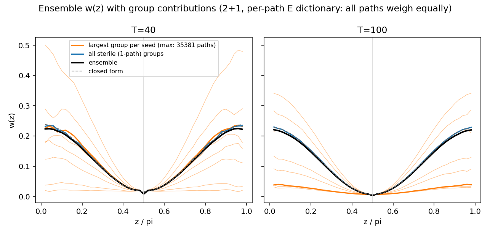
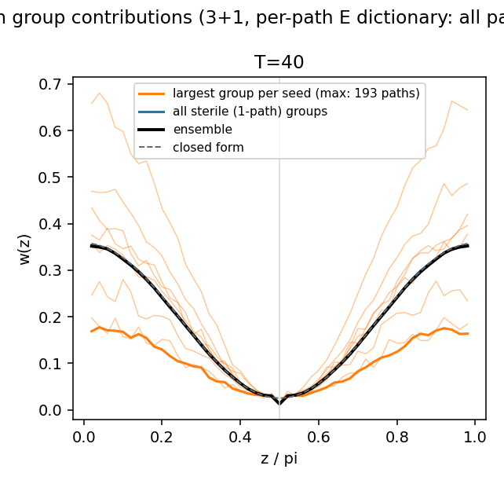
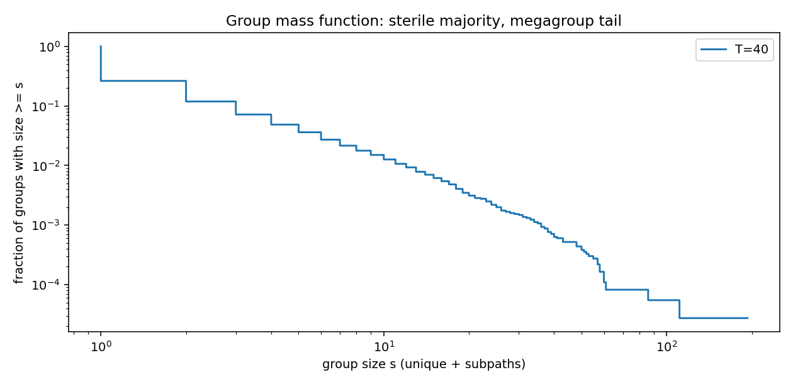
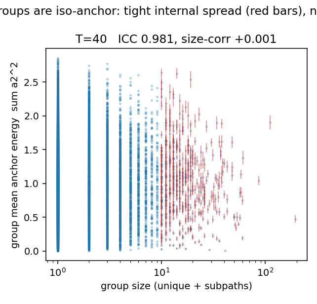

The w(z) history under the original dictionary, with the groups
drawn on top: megagroups fan across the whole velocity range, the
ensemble doesn't notice
New --out-wz-overlay mode of
analysis/analyze_subpath_groups.py (commit
929c0dc),
run on the stored FULLSUB dumps (2+1 full-spectrum terms=T with
phase-2 subpaths, campaign fullsub2d_e6): T = 40 and
100, 8 seeds each pooled, complete (untruncated) cells only. No new
packing runs. Question from Kevin: redo the group w(z) analysis
under the original energy dictionary — every path an
equal share of the budget, rather than every unique group an equal
share — and draw the group contributions onto the absolute
w(z) history: the largest accretion group's own w(z) against the
aggregate of all 1-path (sterile) groups.
First, the dictionary itself: at terms = T the original per-path
E ~ Σb dictionary weighs every worldline
exactly equally — each full-spectrum path carries the
entire frequency pool, so Σb is the same number for all of
them (measured spread 0, lab note 07-28). Kevin's expectation
“the energy of all paths would probably contribute
evenly” is not approximately but identically true in this
model, which makes the original dictionary the natural
one-path-one-vote accounting.
The ensemble, the closed form, and the sterile
aggregate are one curve. The pooled w(z) tracks
(d/3)(cos²z/3 + 1/T) across the cycle, and the summed
contribution of the sterile groups (70–71% of groups,
0.4–3.4% of paths) lies on top of it — running only
a few percent hot at the extreme endpoints. Turnaround values:
0.00830 vs d/(6T) = 0.00833 at T=40; 0.00333 vs 0.00333 at
T=100. The equal-energy-per-group re-weighting of 08-05 moved
the ensemble by a third of a percent; the original dictionary
confirms the same picture from the other accounting.
A single megagroup, though, has its own w(z) —
set by its bulk velocity. The largest group of each
seed (thin lines, one per seed) fans from ~0.02 to ~0.5 at the
bang: a direct corollary of the 08-05 iso-anchor discovery.
A group shares one comoving anchor speed, so away from the
turnaround — where the a₂cos z anchor term dominates
v² — a group's w(z) is essentially a measurement of
its peculiar velocity, and different groups sit anywhere in the
velocity range. At the turnaround every group collapses onto
the ensemble curve: the same uniformity-at-π/2 the rigidity
results established, now visible as geometry.
The two biggest objects in the data disagree
politely. The overall-largest group at T=40 (35,381
paths) happens to ride near the ensemble curve; the largest at
T=100 (7,130 paths) is a slow one, flat near w ≈ 0.03
across the whole cycle. Which is the point: megagroup w(z)
curves are draws from the velocity distribution, not tracers of
the equation of state.
The accretion (iso-anchor) graph would not change at
all under the original dictionary. Checked in code
rather than by re-plotting: plot_anchor and the
ICC/size-corr statistics are unweighted means and variances of
the per-path anchor energy — no energy dictionary enters
anywhere. Kevin guessed the red bars would “fill in with
dots”; in fact the figure is bit-identical under both
accountings, since the dictionaries only re-weight w, and that
graph never weights.

Absolute w(z) under the per-path (original) dictionary, 8 seeds
pooled. Black: ensemble; dashed: closed form; blue: all sterile
groups aggregated; orange: each seed's largest accretion group
(bold: the overall largest). Groups are iso-anchor objects, so a
single group's off-turnaround w reads its bulk peculiar velocity;
the ensemble and the sterile fleet average over the velocity
distribution and land on the closed form.
The missing panel is the 3+1 twin — and it cannot be made from
stored data: subpaths exist only in the 2+1 engine. The port of the
phase-2 accretion mode into braid_cuda3d.cu plus a
first 3+1 subpath campaign (T=40 smoke run) is now queued; this
entry's overlay is the template the 3+1 data will drop into.
3+1 grows the same halos: the subpath phase ported to the 3+1
engine, and the first 3+1 accretion groups are iso-anchor
Engine port: braid_cuda3d.cu gained the
--subpaths phase-2 accretion mode (commit
130cdc1;
dense grid only, synchronous phase 2 with a forced per-round grid
rebuild — a stale grid wrongfully rejects in sub mode, unlike
the conservative staleness of the unique phase). Gated before any
campaign by the new exact invariant checker
analysis/verify_subpath_dump.py (commit
cdd132c):
gid layout, pairwise non-contact of uniques, no cross-group
contacts, no orphan subpaths, connected group contact graphs, curve
consistency — the checker itself validated against a 2+1
reference run, then passed on 3+1 output in both the Chebyshev and
euclid arms; phase-1 N with and without --subpaths
lands inside the stored fullspec3d seed spread. Campaign
fullsub3d_e6 (commit
7f43ced):
T=40 single-T smoke, terms=T, 8 seeds, 1e-6 cutoff, 1e9
sub-attempts per seed on mother+kitt; dumps complete at ~8k
rows/seed (the new Campaign.dump_rows = 250000 knob
made censoring impossible rather than merely unlikely).
The open question from the 08-05 thread — “does 3+1
grow the same objects?” — is answered: yes, in every
structural signature, at about a tenth the accretion speed.
Same mass function shape. Sterile fraction 74%
(2+1: 68–71%), median size 1, a scale-free-looking middle
— 36,548 groups over 63,555 paths, 8 seeds pooled.
Same iso-anchor coherence. ICC = 0.981 for
groups ≥10 members (shuffled null ≈ 0), size-corr
+0.001. The exclusion-selects-comovers mechanism is not a 2+1
accident: three spatial dimensions grow the same coherent,
bulk-velocity-sharing objects.
Same w rigidity. Every multiplicity bin within
1% of the ensemble at the turnaround under both dictionaries
(the 100+ bin reads 1.08× but contains two groups —
group-count statistics, per the coherence lesson). Ensemble
turnaround w = 0.01259 vs d/(6T) = 0.01250.
Accretion is ~10× slower, and the tail is short
at this budget. 1e9 sub-attempts bought ~3,300
subpaths/seed vs ~36,000 in 2+1 at the same T and budget; the
largest group holds 193 members vs 35,381. Touching exactly one
group while dodging all others is much rarer with a third
spatial dimension to miss in. Subpaths never jam, so whether
3+1 megagroups appear at deeper budgets — or the tail
truncates intrinsically — is the natural follow-up.

The 3+1 twin of the morning's overlay: ensemble, closed form, and
the sterile aggregate are one curve under the original per-path
dictionary; each seed's largest group (orange, max 193 paths)
rides its own iso-anchor velocity and collapses onto the ensemble
at π/2. Same geometry as 2+1, one dimension up.

The 3+1 group mass function at the 1e9-attempt budget:
scale-free-looking middle, truncated tail (max 193 vs 35,381 in
2+1 at the same T and budget). Budget-conditional —
subpaths do not jam.

3+1 accretion groups are iso-anchor: tight internal spread, no
size trend — ICC 0.981. (And per the morning's check, this
figure is identical under either energy dictionary.)
PHYSICS_FINDINGS.md §17 records the result;
analyze_subpath_groups.py is dimension-aware as of
today, so every group analysis now runs on either engine's dumps
unchanged. The freshly published
3+1 box viewer
reads these dumps directly (gid column included — color mode
“Group”).